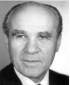

 Вейнерович Иосиф Наумович Veinerovich Joseph Вейнерович Іосіф Навумавіч
(1909 - 1998) - советский кинооператор и режиссёр документального кино.
Народный артист БССР (1973). Лауреат Сталинской премии второй степени (1943).
Член ВКП(б) с 1942 года.
(1909 - 1998) - Soviet cameraman and director of documentary films.
People's Artist of the BSSR (1973). Winner of the Stalin Prize of the second degree (1943).
Member of the CPSU (b) since 1942.
(1909 - 1998) - савецкі кінааператар і рэжысёр дакументальнага кіно.
Народны артыст БССР (1973). Лаўрэат Сталінскай прэміі другой ступені (1943).
Член ВКП (б) з 1942 года.
1934
Окончил операторский факультет Государственного техникума кинематографии
Graduated from the Faculty of Photography of the State Technical School of Cinematography
Скончыў аператарскі факультэт Дзяржаўнага тэхнікума кінематаграфіі
1925 - 1988
С 1925 по 1988 год — оператор и режиссёр киностудии
Белгоскино-Беларусьфильм. Во время Великой Отечественной
войны снимал фронтовую кинохронику (ЦСДФ).
From 1925 to 1988 - cameraman and director of the film studio
Belgoskino-Belarusfilm. During the Great Patriotic
War filmed front-line newsreel (TSSDF).
З 1925 па 1988 год - аператар і рэжысёр кінастудыі
Белдзяржкіно-Беларусьфільм. У час Вялікай Айчыннай
вайны здымаў франтавую кінахроніку (ЦСДФ).
1951 - 1953
С мая 1951 года по август 1953 года работал в Институте механизации и электрификации сельского
хозяйства АН БССР младшим научным сотрудником
From May 1951 to August 1953 he worked at the Institute of Mechanization and Electrification of Agriculture of
the Academy of Sciences of the BSSR as a junior research assistant.
З траўня 1951 году да канца жніўня 1953 году працаваў у Інстытуце механізацыі і электрыфікацыі сельскай гаспадаркі
АН БССР малодшым навуковым супрацоўнікам
Список работ: List of Works: Списак работ:
- 1930 На границе On the border На мяжы
- 1933 Большая весна Big spring Вялікая вясна
- 1936 Ударом на удар Blow to blow Ударам на ўдар
- 1941 Наша Москва Our Moscow Наша Масква
- 1945 Победный май Victorious may Пераможны май
- 1947 Новоселье Housewarming Уваходзіны
- 1948 30 лет БССР 30 years of the BSSR 30 год БССР
- 1950 Советская Белоруссия; Освоение и осушение болот Soviet Belarus; Development and drainage of marshes Савецкая Беларусь; Засваенне і асушэнне балот
- 1957 Потребкооперация Белоруссии Consumer operation of Belarus Спажыўкааперацыя Беларусі
- 1964 Конец канители Gimp end Дэкамерон
- 1968 Цветы в декабре December Flowers Канец важданінай
- 1974 Могилев: дни и ночи мужества Mogilyov: days and nights of courage Магілёў: дні і ночы мужнасці
{kind=link}
{kind=link}
{kind=link}